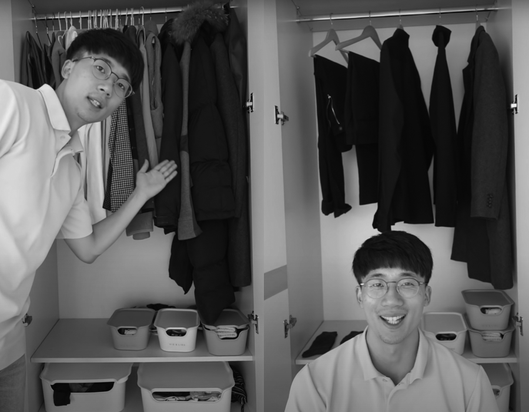

옷을 고르는 시간이 아까워졌다
옷은 개성을 드러내고 다른 사람에게 나의 감각을 자랑하는 중요한 사회적 도구다. 게다가 소셜미디어가 발달하면서 매일의 옷차림을 다른 사람과 공유하는 일이 유행처럼 퍼져 ‘OOTD(Outfit Of The Day)’라는 말까지 생겨났다. 하지만 옷장 앞에서 누구나 콧노래를 부르며 행복한 고민을 하는 것은 아니다.
나는 패션에 관심은 많지만 옷을 잘 입는 편은 아니다. 다양한 스타일의 옷을 소화하진 못하기 때문에 쇼핑을 해도 항상 셔츠나 니트 같은 무난한 스타일의 옷을 구매한다. 그나마 부모님이 물려주신 적당한 키와 마른 체형 덕분에 옷빨은 잘 받는 편이다. 그래서 옷장에는 비슷비슷한 옷이 가득하다. 그런데도 매일 아침 옷을 고르는 건 왜 이렇게 어려운지. 아침에 씻으러 욕실에 들어갈 때부터 고민이 시작된다.
‘오늘 날씨가 어떻지? 니트를 입을까? 아냐, 니트는 어제 입었으니까 셔츠를 입을까? 그럼 갈색 셔츠를 입을까, 노란색 줄무늬 셔츠를 입을까? 갈색 셔츠는 핏이 잘 안 사는 것 같은데…….’
결국 머리를 말리고 옷장 앞에서 몇 벌을 몸에 대보고 나서야 겨우 뭘 입을지 정한다. 차라리 연예인들처럼 코디네이터가 있어서 입을 옷을 정해주면 좋겠다는 생각도 든다. 아니면 나도 그냥 페이스북 CEO 마크 저커버그처럼 같은 옷만 사놓고 주야장천 그것만 입을까? 매일 같은 옷만…… 입는다고?
오, 좋은 도전거리를 찾았다.
마크 저커버그는 단벌 신사의 대표주자 스티브 잡스처럼 항상 회색 티셔츠나 후드티만 입는 것으로 유명하다. 그는 옷을 간소하게 입는 이유에 대해 “세상을 더 낫게 만드는 고민 이외의 다른 결정은 최소한으로 하고 싶다.”라고 말했다고 한다. 즉, 생산성을 높이기 위함이라는 말인데, 과연 나도 같은 옷만 입으면 그렇게 될지 궁금했다.
옷장을 열어보니 형형색색의 셔츠, 니트가 걸려 있었다(이때 처음으로 깨달았다. 아, 나는 옷을 못 입는 사람이구나. 그때그때 마음에 드는 옷만 사다 보니 매치해서 입을 만한 옷이 한정적이었다. 그래서 옷을 고르기가 더 힘들었을지도). 그중 내가 가장 자주 입고 내게 잘 어울리는 옷은 검정색 셔츠와 검정색 터틀넥 티셔츠였다. 마침 바지도 검정색 슬랙스와 청바지가 있어서 한 달 동안 올블랙으로 입어봐야겠다고 생각했다. 다른 불필요한 옷들은 서랍 깊은 곳에 넣어두고 보니 옷장이 세상 단출해졌다.
셔츠 1벌
터틀넥 1벌
슬랙스 1벌
청바지 1벌
코트 1벌
토트백 1개
양말 3켤레
이게 내가 한 달 동안 입고 다닐 옷과 가방 전부였다. 깔끔해진 옷장을 마주하는 것만으로도 벌써 잡생각이 싹 정리되는 느낌이었다.
검은 옷투성이라 코디라고 할 만한 게 없었다. 이 도전을 했을 때가 3월이라 추운 날은 터틀넥, 덜 추운 날은 셔츠, 많이 추운 날은 터틀넥 위에 셔츠를 입으면 그만이었다. 씻는 내내 고민거리였던 ‘오늘 뭐 입지?’에 대한 답안지는 더 이상 필요하지 않았다. 이왕 하는 거 제대로 해보자는 생각에 신발 역시 진갈색 구두 하나만 꺼내놓았다.
✔ 목표: 한 달 동안 정해진 옷 몇 벌만 입는다.

선택하지 않아도 된다는 선택지
결과는 대만족이었다. 그저 걸린 옷을 꺼내 입기만 하면 되니 도전이라고 할 것도 없었다. 이렇게 좋은 걸 이제야 알았다니! 당시 나는 오전에는 원단 회사에 인턴으로 출근하고 오후에는 학교에서 수업을 들었는데, 출근 준비가 이렇게 간편할 수 없었다. 선택지가 매우 좁았기 때문에 일어나면서부터 날씨 정도만 확인하면 무엇을 입을지가 곧바로 정해졌다. 그다음에는 아무 고민 없이 음악을 들으며 신나게 샤워하면 그만이었다.
물론 단점도 있었다. 한 달 도전으로 시작했으므로 같은 옷을 여러 벌 사두지 않아서 세탁을 자주 해야 했다. 귀가하면 거의 필수로 세탁기에 옷을 집어넣고 35분짜리 울 전용 코스를 돌렸다. 당연히 이 정도의 작은 불편은 옷에 대한 고민을 하지 않아도 된다는 장점에 묻혀 아무런 문제가 되지 않았다. 되레 경제적인 여유가 된다면 같은 옷을 두 벌 정도씩 더 사놓으면 좋겠다는 생각도 들었다.
흥미롭게도 매일 만나는 회사 동료나 학교 친구 들은 내가 항상 같은 옷을 입는다는 걸 거의 알아차리지 못했다. 처음에는 매일 같은 옷을 입고 다니면 혹시라도 게을러서 세탁도 안 하고 똑같은 옷만 입는다고 오해를 받을까 걱정했다. 하지만 다행히 아무에게서도 그런 질문을 받지 않았다. 2주 정도 지나 회식 자리에서 요즘 하고 있는 도전에 대해 이야기하자 그제야 “생각해보니 요즘 스타일이 거의 비슷했던 것 같아.”라는 답이 돌아왔다.
또 한번은 도전을 시작하고 3주쯤 되었을 때, 친한 친구를 만나 이 주제로 대화를 나누게 되었다. 친구는 자신도 아침마다 무슨 옷을 입을지 몰라 고민하는 것은 물론, 쇼핑을 해도 대체 뭘 사야 할지 모르는 ‘패알못’이라며 차라리 교복을 입었던 고등학생 때가 더 편했다고 이야기했다. 학생들의 개성을 무시하고 획일성을 강조하는 교복이 좋은 문화라는 말은 아니다. 다만 매일 무엇을 입을지 고민하지 않아도 되는 상황이 편했던 것만은 사실이다.
매일 다른 옷을 입는 것은 누군가에게는 적극적으로 자신을 표현하는 신나는 일이다. 아침마다 거울 앞에서 그날의 날씨와 분위기에 어울리는 옷을 고르며 기분 좋게 하루를 시작하는 사람도 있다. 그러나 나처럼 여러 가지 스타일을 소화하지 못하는 데다가 옷을 고르는 일 자체가 스트레스인 사람도 많다. 이런 경우에는 같은 옷을 입는 것이 의외의 자유로움을 가져다줄 수 있다. 게다가 같은 스타일을 고집하다 보면 자연스럽게 이것이 나의 정체성으로 자리 잡을 수도 있다. 우리를 둘러싼 수많은 선택지 중에서 아무것도 선택하지 않는 것이 최고의 답이 된 셈이다.

다른 사람을 의식하느라 시간을 낭비하지 말 것
뉴발란스 992 운동화, 리바이스 501, 이세이 미야케의 검정 터틀넥. 지금은 고인이 된 애플의 스티브 잡스가 매년 신제품 프레젠테이션에 입고 나왔던 옷이다. 그는 대부분의 공식 석상에서 이 옷차림을 고집했다. 어떤 이유로 이렇게 입는지는 단 한 번도 언급한 적이 없지만 말이다.
다만 검정 터틀넥에 청바지를 입기 시작한 것은 일본의 소니사를 방문한 후부터였다. 그 당시 직원들이 똑같은 유니폼을 입고 일하는 것을 신기하게 여겨 사장에게 이유를 물었더니 그는 “사원들이 유니폼을 입고 난 후 소니만의 특징이 생기고 단결하는 계기가 됐다.”라고 대답했다. 그 뒤로 잡스는 소니의 유니폼 디자이너였던 이세이 미야케와 인연을 맺고 ‘편의성’과 ‘이미지메이킹’을 위해 잡스 고유의 스타일을 갖추자는 데 의견을 모아 지금의 스타일을 탄생시켰다. 여기서 말하는 편의성이 옷에 대한 고민에서 벗어나 생산성을 높이기 위한 조치가 아니었을까.
그래서 내 생산성이 좋아졌냐고 묻는다면, 답은 ‘글쎄’다. 이를 구체적인 수치로 이야기하기에는 어렵기 때문이다. 그래도
하나 줄었고, 옷장 앞에서 버리는 시간이 사라졌다는 것만은 분명하다. 무엇을 입을지 생각하지 않아서 5분이라도 더 잘 수 있게 되었다면 그것만으로도 내 생산성을 높이는 데 도움이 되지 않았을까?
당시의 도전이 습관이 되어서인지 2년이 지난 지금도 나는 거의 비슷한 옷만 입는다. 그때에 비하면 옷장에는 다양한 옷이 채워졌지만, 특별한 날이 아니면 하의는 청바지나 슬랙스, 상의는 단색 티셔츠나 셔츠 몇 벌을 돌아가며 입는다.

매일 아침 나를 괴롭히던 고민거리가 하나 줄었고,
옷장 앞에서 버리는 시간이 사라졌다는 것만은 분명하다.
무엇을 입을지 생각하지 않아서 5분이라도 더 잘 수 있게 되었다면
그것만으로도 내 생산성을 높이는 데 도움이 되지 않았을까?
잡스는 2005년 스탠퍼드대학교에서 다음과 같은 유명한 졸업 연설을 남겼다.
여러분의 시간은 한정되어 있습니다. 그러므로 다른 사람의 삶을 사느라고 시간을 낭비하지 마십시오. 과거의 통념, 즉 다른 사람이 생각한 결과에 맞춰 사는 함정에 빠지지 마십시오. 다른 사람의 의견이 내면의 목소리를 가리는 소음이 되게 하지 마십시오. 무엇보다 중요한 것은 당신의 마음과 직관을 따라가는 용기를 가지라는 것입니다. 당신의 마음은 진정으로 무엇이 되고 싶은지 이미 알고 있습니다. 다른 모든 것은 부차적인 것들입니다.
우리의 시간은 한정되어 있다. 이 시간에 무엇을 할지는 나만이 선택할 수 있다. 아침에 어떤 옷을 입을지 고민하는 시간이 의미 있다면 그렇게 사용해도 좋다. 다만 그 시간이 무의미하다는 생각이 들었다면, 이제는 다른 사람의 시선을 의식하지 않고 내가 정말 중요하다고 생각하는 일에 조금 더 집중해보면 어떨까? 의외로 다른 사람은 내 옷차림 같은 사소한 일에는 조금도 신경을 쓰지 않는다. 혹시라도 나처럼 어떤 옷을 입을지 매일 아침 고민하고 있다면 옷 가짓수를 과감하게 줄여보기를 추천한다.
참고로 영상을 올린 후 어떤 구독자분은 요일별로 무엇을 입을지 정해놓는 방법을 추천했다. 매일 같은 옷을 입는 게 지루하다면 그 역시 좋은 대안이 될 수 있을 것이다.